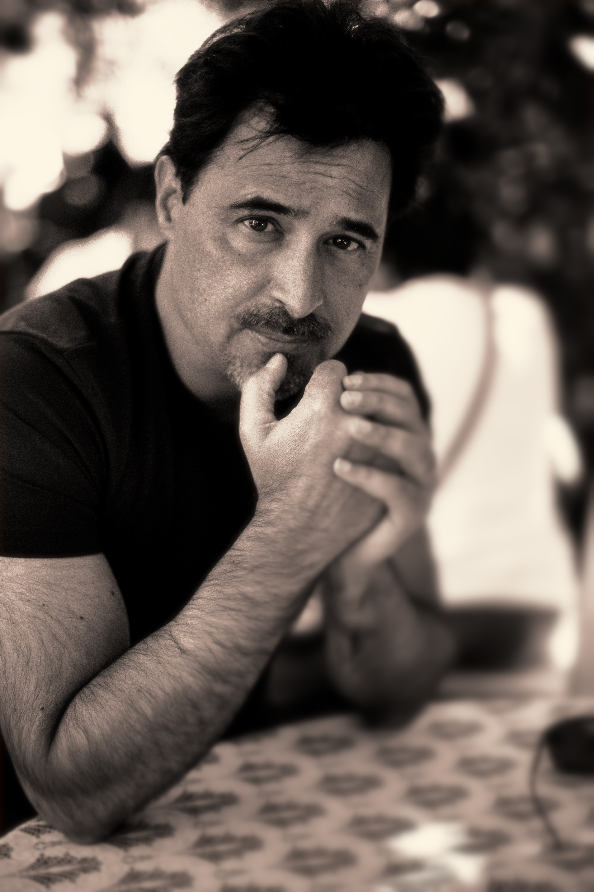

Sobre o Autor
José Eduardo Agualusa, nascido em Huambo, Angola, em 13 de dezembro de 1960, é um dos mais prestigiados escritores em língua portuguesa contemporâneos. O escritor de raízes portuguesas e brasileiras mudou-se ainda jovem para Lisboa, Portugal, com o objetivo de estudar agronomia e silvicultura, entretanto, acabou mudando a sua carreira para o jornalismo.
A partir daí passou a colaborar para vários jornais, entre eles o “Público”. Além de jornalista é romancista, contista, cronista e autor de literatura infantil. Sua obra, atualmente traduzida para mais de 25 idiomas, começou com sua estreia em 1988, com “A conjura”, romance que lhe deu o Prêmio Sonangol Revelação de Literatura de Angola.
Publicou “Nação Crioula” em 1998, vencendo o Grande Prêmio de Literatura RTP. Posteriormente publicou “Fronteiras perdidas”, “Barroco tropical”, e "O vendedor de passados”, que ganhou o Prêmio Independente de Ficção Estrangeira do jornal The Independent.
Os seus contos e livros infantis também foram premiados, como o Grande Prémio de Conto da APE e o Grande Prémio de Literatura para Crianças da Fundação Calouste Gulbenkian.
Em 2017, venceu o Dublin Literary e, com o valor recebido pelo prêmio, pretende instalar uma biblioteca pessoal na Ilha de Moçambique, aberta aos habitantes do local.
Seus livros são conhecidos por abordarem temas de identidade, memória e o impacto cultural do colonialismo percorrendo muitas realidades, mas se voltando mais aos personagens do que aos lugares. Alguns de seus personagens são baseados em figuras reais como a poetisa Lídia do Carmo Ferreira (Estação das chuvas) e a rainha Ana de Sousa (A rainha Ginga).
O autor já viveu em Lisboa, Luanda, Rio de Janeiro e Berlim, mas atualmente mora entre Luanda e Lisboa.
